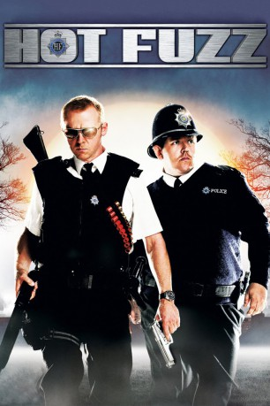

#10 Hot Fuzz - Verbrechen verboten
Alternativ: Hot Fuzz
 
 IMDB-Wertung: 7.9 / 10
IMDB-Wertung: 7.9 / 10  Metascore: 81
Metascore: 81 
Der Polizist Nicholas Angel wird von London in das Provinznest Sandford versetzt, weil er seine Kollegen immer in den Schatten stellte. Zunächst langweilt er sich - doch dann hat er mehr als nur Kleinstadtdelikte aufzudecken. Zwar gibt es an seinem neuen Einsatzort kaum Verbrechen, dafür aber jede Menge „Unfälle“.
Jahr: 2007
Dauer: 121 Minuten
FSK: 16
Land: England Studio: Universal PicturesTonspuren: DTS - ,
Untertitel:
Auflösung: 720p (1280×544) Größe: 6993 MB
Genre: Action, Komödie
Regisseur: Edgar Wright
Drehbuch: Edgar Wright, Simon Pegg
Soundtrack: David Arnold
Darsteller:
Datei: X:\3-Trilogie(N-Z)\Three Flavours Cornetto\Hot Fuzz - Verbrechen verboten (2007, FSK16, 1280x544).mkv seit 15.01.2015
Festplatte: HD Collection-3(N-Z)-6(A-Z)
 Alle Filme aus Gruppe '3-Trilogie(N-Z)\Three Flavours Cornetto'
Alle Filme aus Gruppe '3-Trilogie(N-Z)\Three Flavours Cornetto'